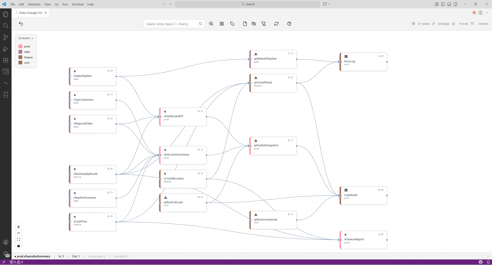
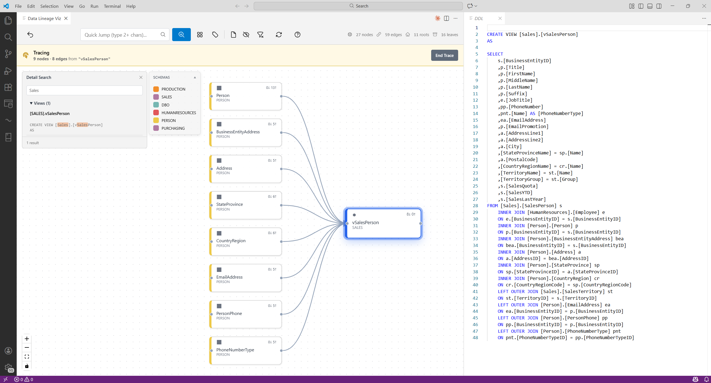
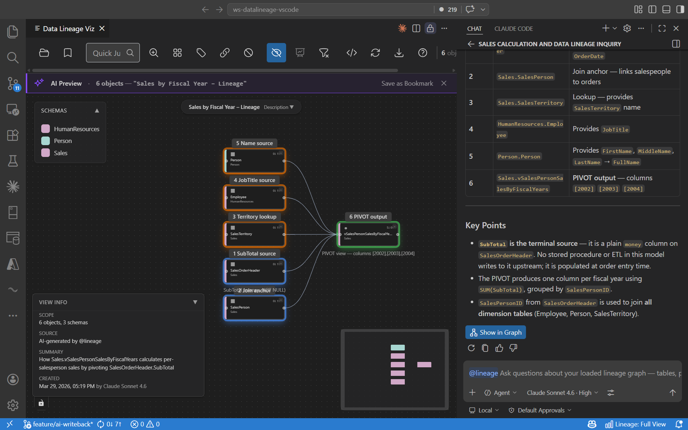

See how tables, views, stored procedures, and functions connect — right inside VS Code. Import from .dacpac files or connect directly to SQL Server, Azure SQL, Fabric DW, or Synapse. Now with @lineage AI and schema overview.
Tested with SQL Server 2025 · Azure SQL Database · Fabric Data Warehouse · Synapse Dedicated SQL Pool

Search SQL bodies, trace dependencies, and preview DDL — all without leaving VS Code.


Query your loaded lineage graph in plain English. The assistant uses dedicated lineage tools and answers from your own data model — never from general knowledge.
Ask your graph questions in plain English. Answers from your actual schemas and dependencies — not AI guesses.
Open a .dacpac or import from a database connection. Two clicks to your full dependency graph — no extra tooling needed.
Find any object instantly with autocomplete. Minimap and schema color coding keep you oriented on large graphs.
Follow dependencies upstream or downstream. Find the shortest path between any two nodes.
Spot islands, orphans, hubs, and cycles at a glance. Know your blast radius before changing anything.
Click any node to read its SQL with full syntax highlighting. Full-text search across all stored procedures and views.
Large graphs auto-switch to schema-level bubbles. Click any schema to drill into its objects and neighbors.
Export to Draw.io for documentation. Override parse rules and import queries with plain YAML — no code changes needed.